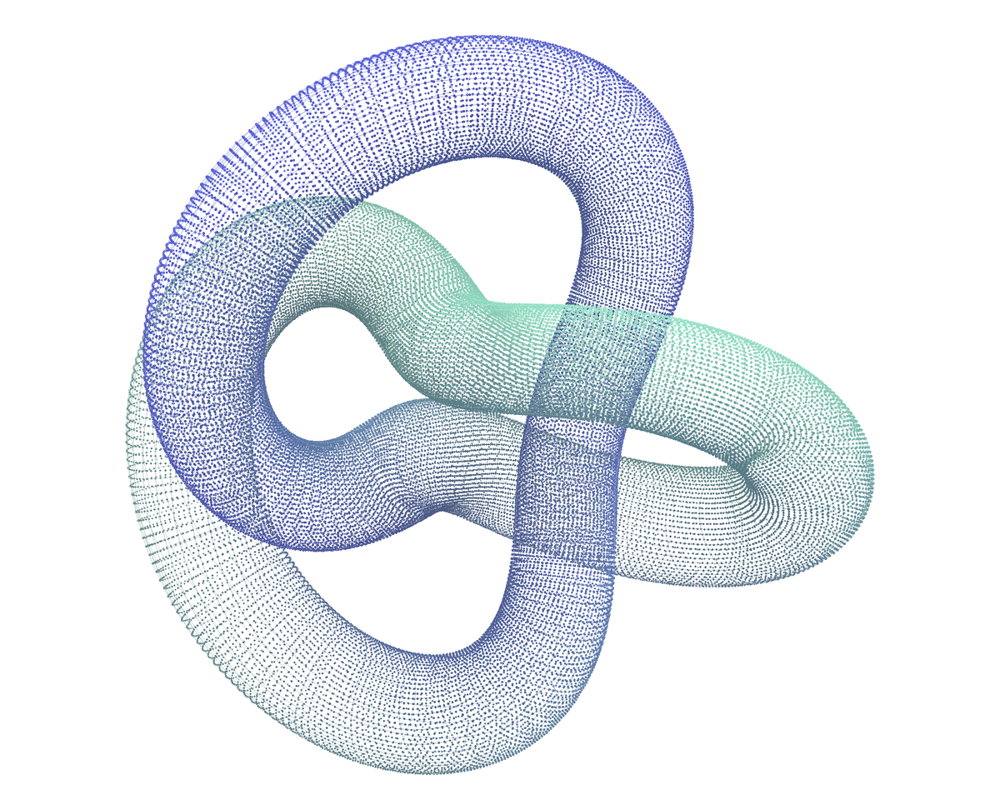
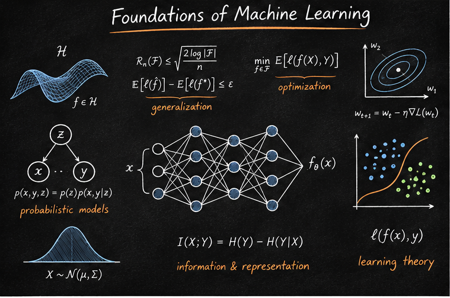
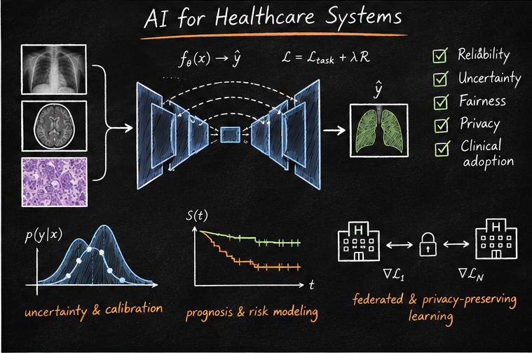

Laboratoire international sur les systèmes d’apprentissage
Nous étudions comment les machines apprennent, quand leurs prédictions sont fiables et comment elles peuvent éclairer les décisions humaines.

Programme scientifique
Axes de recherche
Quatre questions sur les fondements et les usages des systèmes d’apprentissage.

Fondements de l’apprentissage automatique
À quelles conditions un modèle peut-il faire des prédictions fiables sur de nouvelles données ?

IA générative de confiance
Comment vérifier les sources sur lesquelles repose une réponse générée ?

IA multi-agents et modèles du monde
Comment des agents se coordonnent-ils quand chacun n’observe qu’une partie de son environnement ?

IA pour les systèmes de santé
Un modèle clinique reste-t-il fiable dans un autre hôpital, sur un autre appareil ou auprès d’une autre population ?

Le laboratoire
Un laboratoire commun à Montréal
Créé en 2022, l’ILLS réunit à l’ÉTS Montréal des chercheurs et chercheuses de France et du Québec pour faire progresser les systèmes d’apprentissage. Ses recherches couvrent les fondements de l’apprentissage automatique, l’IA générative sûre et digne de confiance, l’IA multiagent et les modèles du monde, ainsi que l’IA pour la santé et les systèmes d’ingénierie critiques. Dans ces domaines, les équipes étudient comment les systèmes d’IA apprennent, communiquent et prennent des décisions, et comment renforcer leur fiabilité, leur équité et la protection de la vie privée.
Direction
Pablo Piantanida est directeur de l’ILLS et Mark Coates en est le codirecteur.
Établissements partenaires principaux


Établissements partenaires associés
Québec, Canada

Établissements partenaires de soutien
Québec, Canada

France

Nous joindre
Bureaux de Montréal
École de technologie supérieurePavillon F, 5ᵉ étage
1132, rue William
Montréal (Québec) H3C 1P8, Canada
Secrétariat de l’ILLS
Pour organiser une visite ou prendre contact avec le laboratoire.
secretariat-ills@etsmtl.ca